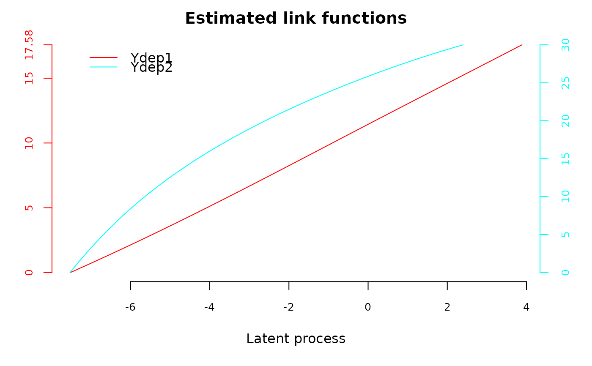

Estimation of multivariate mixed-effect models and multivariate latent class mixed-effect models for multivariate longitudinal outcomes of possibly multiple types (continuous Gaussian, continuous non-Gaussian/curvilinear, ordinal) that measure the same underlying latent process.
Source:R/multlcmm.R
multlcmm.RdThis function constitutes a multivariate extension of function lcmm.
It fits multivariate mixed models and multivariate latent class mixed models
for multivariate longitudinal outcomes of different types. It handles
continuous longitudinal outcomes (Gaussian or non-Gaussian, curvilinear) as
well as ordinal longitudinal outcomes (with cumulative probit measurement model).
The model assumes that all the outcomes measure the same underlying latent process
defined as their common factor, and each outcome is related to this latent common
factor by a specific parameterized link function. At the latent process level, the
model estimates a standard linear mixed model or a latent class linear mixed
model when heterogeneity in the population is investigated (in the same way
as in functions hlme and lcmm). Parameters of the nonlinear link
functions and of the latent process mixed model are estimated simultaneously
using a maximum likelihood method.
Usage
multlcmm(
fixed,
mixture,
random,
subject,
classmb,
ng = 1,
idiag = FALSE,
nwg = FALSE,
randomY = FALSE,
link = "linear",
intnodes = NULL,
epsY = 0.5,
cor = NULL,
data,
B,
convB = 1e-04,
convL = 1e-04,
convG = 1e-04,
maxiter = 100,
nsim = 100,
prior,
pprior = NULL,
range = NULL,
subset = NULL,
na.action = 1,
posfix = NULL,
partialH = FALSE,
verbose = FALSE,
returndata = FALSE,
methInteg = "QMC",
nMC = NULL,
var.time = NULL,
nproc = 1,
clustertype = NULL
)
mlcmm(
fixed,
mixture,
random,
subject,
classmb,
ng = 1,
idiag = FALSE,
nwg = FALSE,
randomY = FALSE,
link = "linear",
intnodes = NULL,
epsY = 0.5,
cor = NULL,
data,
B,
convB = 1e-04,
convL = 1e-04,
convG = 1e-04,
maxiter = 100,
nsim = 100,
prior,
pprior = NULL,
range = NULL,
subset = NULL,
na.action = 1,
posfix = NULL,
partialH = FALSE,
verbose = FALSE,
returndata = FALSE,
methInteg = "QMC",
nMC = NULL,
var.time = NULL,
nproc = 1,
clustertype = NULL
)Arguments
- fixed
a two-sided linear formula object for specifying the fixed-effects in the linear mixed model at the latent process level. The response outcomes are separated by
+on the left of~and the covariates are separated by+on the right of the~. For identifiability purposes, the intercept specified by default should not be removed by a-1. Variables on which a contrast above the different outcomes should also be estimated are included withcontrast().- mixture
a one-sided formula object for the class-specific fixed effects in the latent process mixed model (to specify only for a number of latent classes greater than 1). Among the list of covariates included in
fixed, the covariates with class-specific regression parameters are entered inmixtureseparated by+. By default, an intercept is included. If no intercept,-1should be the first term included.- random
an optional one-sided formula for the random-effects in the latent process mixed model. At least one random effect should be included for identifiability purposes. Covariates with a random-effect are separated by
+. By default, an intercept is included. If no intercept,-1should be the first term included.- subject
name of the covariate representing the grouping structure.
- classmb
an optional one-sided formula describing the covariates in the class-membership multinomial logistic model. Covariates included are separated by
+. No intercept should be included in this formula.- ng
number of latent classes considered. If
ng=1nomixturenorclassmbshould be specified. Ifng>1,mixtureis required.- idiag
optional logical for the variance-covariance structure of the random-effects. If
FALSE, a non structured matrix of variance-covariance is considered (by default). IfTRUEa diagonal matrix of variance-covariance is considered.- nwg
optional logical of class-specific variance-covariance of the random-effects. If
FALSEthe variance-covariance matrix is common over latent classes (by default). IfTRUEa class-specific proportional parameter multiplies the variance-covariance matrix in each class (the proportional parameter in the last latent class equals 1 to ensure identifiability).- randomY
optional logical for including an outcome-specific random intercept. If
FALSEno outcome-specific random intercept is added (default). IfTRUEindependent outcome-specific random intercepts with parameterized variance are included.- link
optional vector of families of parameterized link functions to estimate (one by outcome). Option "linear" (by default) specifies a linear link function. Other possibilities include "beta" for estimating a link function from the family of Beta cumulative distribution functions, "thresholds" for using a threshold model to describe the correspondence between each level of an ordinal outcome and the underlying latent process and "Splines" for approximating the link function by I-splines. For this latter case, the number of nodes and the nodes location should be also specified. The number of nodes is first entered followed by
-, then the location is specified with "equi", "quant" or "manual" for respectively equidistant nodes, nodes at quantiles of the marker distribution or interior nodes entered manually in argumentintnodes. It is followed by-and finally "splines" is indicated. For example, "7-equi-splines" means I-splines with 7 equidistant nodes, "6-quant-splines" means I-splines with 6 nodes located at the quantiles of the marker distribution and "9-manual-splines" means I-splines with 9 nodes, the vector of 7 interior nodes being entered in the argumentintnodes.- intnodes
optional vector of interior nodes. This argument is only required for a I-splines link function with nodes entered manually.
- epsY
optional definite positive real used to rescale the marker in (0,1) when the beta link function is used. By default, epsY=0.5.
- cor
optional indicator for inclusion of an autocorrelated Gaussian process in the latent process linear (latent process) mixed model. Option "BM" indicates a brownian motion with parameterized variance. Option "AR" specifies an autoregressive process of order 1 with parameterized variance and correlation intensity. Each option should be followed by the time variable in brackets as
cor=BM(time). By default, no autocorrelated Gaussian process is added.- data
data frame containing the variables named in
fixed,mixture,random,classmbandsubject.- B
optional specification for the initial values for the parameters. Three options are allowed: (1) a vector of initial values is entered (the order in which the parameters are included is detailed in
detailssection). (2) nothing is specified. A preliminary analysis involving the estimation of a standard linear mixed model is performed to choose initial values. (3) when ng>1, a multlcmm object is entered. It should correspond to the exact same structure of model but with ng=1. The program will automatically generate initial values from this model. This specification avoids the preliminary analysis indicated in (2) Note that due to possible local maxima, theBvector should be specified and several different starting points should be tried.- convB
optional threshold for the convergence criterion based on the parameter stability. By default, convB=0.0001.
- convL
optional threshold for the convergence criterion based on the log-likelihood stability. By default, convL=0.0001.
- convG
optional threshold for the convergence criterion based on the derivatives. By default, convG=0.0001.
- maxiter
optional maximum number of iterations for the Marquardt iterative algorithm. By default, maxiter=100.
- nsim
number of points used to plot the estimated link functions. By default, nsim=100.
- prior
name of the covariate containing the prior on the latent class membership. The covariate should be an integer with values in 0,1,...,ng. When there is no prior, the value should be 0. When there is a prior for the subject, the value should be the number of the latent class (in 1,...,ng).
- pprior
optional vector specifying the names of the covariates containing the prior probabilities to belong to each latent class. These probabilities should be between 0 and 1 and should sum up to 1 for each subject.
- range
optional vector indicating the range of the outcomes (that is the minimum and maximum). By default, the range is defined according to the minimum and maximum observed values of the outcome. The option should be used only for Beta and Splines transformations.
- subset
optional vector giving the subset of observations in
datato use. By default, all lines.- na.action
Integer indicating how NAs are managed. The default is 1 for 'na.omit'. The alternative is 2 for 'na.fail'. Other options such as 'na.pass' or 'na.exclude' are not implemented in the current version.
- posfix
Optional vector giving the indices in vector B of the parameters that should not be estimated. Default to NULL, all parameters are estimated.
- partialH
optional logical for Splines link functions only. Indicates whether the parameters of the link functions can be dropped from the Hessian matrix to define convergence criteria.
- verbose
logical indicating if information about computation should be reported. Default to TRUE.
- returndata
logical indicating if data used for computation should be returned. Default to FALSE, data are not returned.
- methInteg
character indicating the type of integration if ordinal outcomes are considered. 'MCO' for ordinary Monte Carlo, 'MCA' for antithetic Monte Carlo, 'QMC' for quasi Monte Carlo. Default to "QMC".
- nMC
integer, number of Monte Carlo simulations. By default, 1000 points are used if at least one threshold link is specified.
- var.time
optional character indicating the name of the time variable.
- nproc
the number cores for parallel computation. Default to 1 (sequential mode).
- clustertype
optional character indicating the type of cluster for parallel computation.
Value
The list returned is:
- ns
number of grouping units in the dataset
- ng
number of latent classes
- loglik
log-likelihood of the model
- best
vector of parameter estimates in the same order as specified in
Band detailed in sectiondetails- V
if the model converged (conv=1 or 3), vector containing the upper triangle matrix of variance-covariance estimates of
Bestwith exception for variance-covariance parameters of the random-effects for whichVcontains the variance-covariance estimates of the Cholesky transformed parameters displayed incholesky. If conv=2,Vcontains the second derivatives of the log-likelihood.- gconv
vector of convergence criteria: 1. on the parameters, 2. on the likelihood, 3. on the derivatives
- conv
status of convergence: =1 if the convergence criteria were satisfied, =2 if the maximum number of iterations was reached, =4 or 5 if a problem occured during optimisation
- call
the matched call
- niter
number of Marquardt iterations
- N
internal information used in related functions
- idiag
internal information used in related functions
- pred
table of individual predictions and residuals in the underlying latent process scale; it includes marginal predictions (pred_m), marginal residuals (resid_m), subject-specific predictions (pred_ss) and subject-specific residuals (resid_ss) averaged over classes, the transformed observations in the latent process scale (obs) and finally the class-specific marginal and subject-specific predictions (with the number of the latent class: pred_m_1,pred_m_2,...,pred_ss_1,pred_ss_2,...). If
var.timeis specified, the corresponding measurement time is also included.- pprob
table of posterior classification and posterior individual class-membership probabilities
- Xnames
list of covariates included in the model
- predRE
table containing individual predictions of the random-effects : a column per random-effect, a line per subject.
- cholesky
vector containing the estimates of the Cholesky transformed parameters of the variance-covariance matrix of the random-effects
- estimlink
table containing the simulated values of each outcome and the corresponding estimated link function
- epsY
definite positive reals used to rescale the markers in (0,1) when the beta link function is used. By default, epsY=0.5.
- linktype
indicators of link function types: 0 for linear, 1 for beta, 2 for splines and 3 for thresholds
- linknodes
vector of nodes useful only for the 'splines' link functions
- data
the original data set (if returndata is TRUE)
Details
A. THE PARAMETERIZED LINK FUNCTIONS
multlcmm function estimates multivariate latent class mixed models
for different types of outcomes by assuming a parameterized link function
for linking each outcome Y_k(t) with the underlying latent common factor
L(t) they measure. To fix the latent process dimension, we chose to
constrain at the latent process level the (first) intercept of the latent
class mixed model at 0 and the standard error of the first random effect at
1.
1. With the "linear" link function, 2 parameters are required for the following transformation (Y(t) - b1)/b2
2. With the "beta" link function, 4 parameters are required for the following transformation: [ h(Y(t)',b1,b2) - b3]/b4 where h is the Beta CDF with canonical parameters c1 and c2 that can be derived from b1 and b2 as c1=exp(b1)/[exp(b2)*(1+exp(b1))] and c2=1/[exp(b2)*(1+exp(b1))], and Y(t)' is the rescaled outcome i.e. Y(t)'= [ Y(t) - min(Y(t)) + epsY ] / [ max(Y(t)) - min(Y(t)) +2*epsY ].
3. With the "splines" link function, n+2 parameters are required for the following transformation b_1 + b_2*I_1(Y(t)) + ... + b_n+2 I_n+1(Y(t)), where I_1,...,I_n+1 is the basis of quadratic I-splines. To constraint the parameters to be positive, except for b_1, the program estimates b_k^* (for k=2,...,n+2) so that b_k=(b_k^*)^2. This parameterization may lead in some cases to problems of convergence that we are currently addressing.
4. With the "thresholds" link function for an ordinal outcome with levels 0,...,C, C-1 parameters are required for the following transformation: Y(t)=c <=> b_c < L(t) <= b_c+1 with b_0 = - infinity and b_C+1=+infinity. To constraint the parameters to be increasing, except for the first parameter b_1, the program estimates b_k^* (for k=2,...C-1) so that b_k=b_k-1+(b_k^*)^2.
Details of these parameterized link functions can be found in the papers: Proust-Lima et al. (Biometrics 2006), Proust-Lima et al. (BJMSP 2013), Proust-Lima et al. (arxiv 2021 - https://arxiv.org/abs/2109.13064)
B. THE VECTOR OF PARAMETERS B
The parameters in the vector of initial values B or in the vector of
maximum likelihood estimates best are included in the following
order: (1) ng-1 parameters are required for intercepts in the latent class
membership model, and if covariates are included in classmb, ng-1
paramaters should be entered for each one; (2) for all covariates in
fixed, one parameter is required if the covariate is not in
mixture, ng paramaters are required if the covariate is also in
mixture; When ng=1, the intercept is not estimated and no parameter
should be specified in B. When ng>1, the first intercept is not
estimated and only ng-1 parameters should be specified in B; (3) for
all covariates included with contrast() in fixed, one
supplementary parameter per outcome is required excepted for the last
outcome for which the parameter is not estimated but deduced from the
others; (4) if idiag=TRUE, the variance of each random-effect
specified in random is required excepted the first one (usually the
intercept) which is constrained to 1. (5) if idiag=FALSE, the
inferior triangular variance-covariance matrix of all the random-effects is
required excepted the first variance (usually the intercept) which is
constrained to 1. (5) only if nwg=TRUE and ng>1, ng-1
parameters for class-specific proportional coefficients for the variance
covariance matrix of the random-effects; (6) if cor is specified, the
standard error of the Brownian motion or the standard error and the
correlation parameter of the autoregressive process; (7) the standard error
of the outcome-specific Gaussian errors (one per outcome); (8) if
randomY=TRUE, the standard error of the outcome-specific random
intercept (one per outcome); (9) the parameters of each parameterized link
function: 2 for "linear", 4 for "beta", n+2 for "splines" with n nodes.
C. CAUTIONS REGARDING THE USE OF THE PROGRAM
Some caution should be made when using the program. Convergence criteria are very strict as they are based on the derivatives of the log-likelihood in addition to the parameter and log-likelihood stability. In some cases, the program may not converge and reach the maximum number of iterations fixed at 100. In this case, the user should check that parameter estimates at the last iteration are not on the boundaries of the parameter space.
If the parameters are on the boundaries of the parameter space, the identifiability of the model is critical. This may happen especially with splines parameters that may be too close to 0 (lower boundary) or classmb parameters that are too high or low (perfect classification). When identifiability of some parameters is suspected, the program can be run again from the former estimates by fixing the suspected parameters to their value with option posfix. This usually solves the problem. An alternative is to remove the parameters of the Beta or Splines link function from the inverse of the Hessian with option partialH.
If not, the program should be run again with other initial values, with a higher maximum number of iterations or less strict convergence tolerances.
Specifically when investigating heterogeneity (that is with ng>1): (1) As
the log-likelihood of a latent class model can have multiple maxima, a
careful choice of the initial values is crucial for ensuring convergence
toward the global maximum. The program can be run without entering the
vector of initial values (see point 2). However, we recommend to
systematically enter initial values in B and try different sets of
initial values. (2) The automatic choice of initial values we provide
requires the estimation of a preliminary linear mixed model. The user should
be aware that first, this preliminary analysis can take time for large
datatsets and second, that the generated initial values can be very not
likely and even may converge slowly to a local maximum. This is the reason
why several alternatives exist. The vector of initial values can be directly
specified in B the initial values can be generated (automatically or
randomly) from a model with ng=. Finally, function gridsearch
performs an automatic grid search.
D. NUMERICAL INTEGRATION WITH THE THRESHOLD LINK FUNCTION
When dealing only with continuous outcomes, the computation of the likelihood does not require any numerical integration over the random-effects, so that the estimation procedure is relatively fast. When at least one ordinal outcome is modeled, a numerical integration over the random-effects is required in each computation of the individual contribution to the likelihood. This achieved using a Monte-Carlo procedure. We allow three options: the standard Monte-Carlo simulations, as well as antithetic Monte-Carlo and quasi Monte-Carlo methods as proposed in Philipson et al (2020).
References
Proust-Lima C, Philipps V, Liquet B (2017). Estimation of Extended Mixed Models Using Latent Classes and Latent Processes: The R Package lcmm. Journal of Statistical Software, 78(2), 1-56. doi:10.18637/jss.v078.i02
Proust and Jacqmin-Gadda (2005). Estimation of linear mixed models with a mixture of distribution for the random-effects. Comput Methods Programs Biomed 78: 165-73.
Proust, Jacqmin-Gadda, Taylor, Ganiayre, and Commenges (2006). A nonlinear model with latent process for cognitive evolution using multivariate longitudinal data. Biometrics 62, 1014-24.
Proust-Lima, Dartigues and Jacqmin-Gadda (2011). Misuse of the linear mixed model when evaluating risk factors of cognitive decline. Amer J Epidemiol 174(9): 1077-88.
Proust-Lima, Amieva, Jacqmin-Gadda (2013). Analysis of multivariate mixed longitudinal data: A flexible latent process approach. Br J Math Stat Psychol 66(3): 470-87.
Commenges, Proust-Lima, Samieri, Liquet (2012). A universal approximate cross-validation criterion and its asymptotic distribution, Arxiv.
Philipson, Hickey, Crowther, Kolamunnage-Dona (2020). Faster Monte Carlo estimation of semiparametric joint models of time-to-event and multivariate longitudinal data. Computational Statistics & Data Analysis 151.
Proust-Lima, Philipps, Perrot, Blanchin, Sebille (2021). Modeling repeated self-reported outcome data: a continuous-time longitudinal Item Response Theory model. https://arxiv.org/abs/2109.13064
Examples
# \dontrun{
# Latent process mixed model for two curvilinear outcomes. Link functions are
# aproximated by I-splines, the first one has 3 nodes (i.e. 1 internal node 8),
# the second one has 4 nodes (i.e. 2 internal nodes 12,25)
m1 <- multlcmm(Ydep1+Ydep2~1+Time*X2+contrast(X2),random=~1+Time,
subject="ID",randomY=TRUE,link=c("4-manual-splines","3-manual-splines"),
intnodes=c(8,12,25),data=data_lcmm)
# to reduce the computation time, the same model is estimated using
# a vector of initial values
m1 <- multlcmm(Ydep1+Ydep2~1+Time*X2+contrast(X2),random=~1+Time,
subject="ID",randomY=TRUE,link=c("4-manual-splines","3-manual-splines"),
intnodes=c(8,12,25),data=data_lcmm,
B=c(-1.071, -0.192, 0.106, -0.005, -0.193, 1.012, 0.870, 0.881,
0.000, 0.000, -7.520, 1.401, 1.607 , 1.908, 1.431, 1.082,
-7.528, 1.135 , 1.454 , 2.328, 1.052))
# output of the model
summary(m1)
#> General latent class mixed model
#> fitted by maximum likelihood method
#>
#> multlcmm(fixed = Ydep1 + Ydep2 ~ 1 + Time * X2 + contrast(X2),
#> random = ~1 + Time, subject = "ID", randomY = TRUE, link = c("4-manual-splines",
#> "3-manual-splines"), intnodes = c(8, 12, 25), data = data_lcmm)
#>
#> Statistical Model:
#> Dataset: data_lcmm
#> Number of subjects: 300
#> Number of observations: 3356
#> Number of latent classes: 1
#> Number of parameters: 21
#> Link functions: Quadratic I-splines with nodes 0 8 12 17.581 for Ydep1
#> Quadratic I-splines with nodes 0 25 30 for Ydep2
#>
#> Iteration process:
#> Convergence criteria satisfied
#> Number of iterations: 2
#> Convergence criteria: parameters= 1.3e-09
#> : likelihood= 7.6e-07
#> : second derivatives= 2.8e-07
#>
#> Goodness-of-fit statistics:
#> maximum log-likelihood: -6977.48
#> AIC: 13996.95
#> BIC: 14074.73
#>
#> Maximum Likelihood Estimates:
#>
#> Fixed effects in the longitudinal model:
#>
#> coef Se Wald p-value
#> intercept (not estimated) 0.00000
#> Time -1.07053 0.12291 -8.710 0.00000
#> X2 -0.19220 0.16699 -1.151 0.24975
#> Time:X2 0.10625 0.18659 0.569 0.56908
#> Contrasts on X2 (p=0.88874)
#> Ydep1 -0.00483 0.03455 -0.140 0.88874
#> Ydep2** 0.00483 0.03455 0.140 0.88883
#>
#>
#> Variance-covariance matrix of the random-effects:
#> (the variance of the first random effect is not estimated)
#> intercept Time
#> intercept 1.00000
#> Time -0.19339 1.01248
#>
#> Ydep1 Ydep2
#> Residual standard error: 0.86954 0.88052
#> Standard error of the random effect: 0.00001 0.00001
#>
#> Parameters of the link functions:
#>
#> coef Se Wald p-value
#> Ydep1-I-splines1 -7.52013 0.64398 -11.678 0.00000
#> Ydep1-I-splines2 1.40091 0.18054 7.760 0.00000
#> Ydep1-I-splines3 1.60726 0.10323 15.569 0.00000
#> Ydep1-I-splines4 1.90826 0.07872 24.242 0.00000
#> Ydep1-I-splines5 1.43111 0.09075 15.770 0.00000
#> Ydep1-I-splines6 1.08211 0.21197 5.105 0.00000
#> Ydep2-I-splines1 -7.52839 0.67066 -11.225 0.00000
#> Ydep2-I-splines2 1.13483 0.25558 4.440 0.00001
#> Ydep2-I-splines3 1.45365 0.14628 9.937 0.00000
#> Ydep2-I-splines4 2.32785 0.08634 26.962 0.00000
#> Ydep2-I-splines5 1.05189 0.05908 17.805 0.00000
#>
#> ** coefficient not estimated but obtained from the others as minus the sum of them
#>
# estimated link functions
plot(m1,which="linkfunction")

# variation percentages explained by linear mixed regression
VarExpl(m1,data.frame(Time=0))
#> class1
#> %Var-Ydep1 56.94445
#> %Var-Ydep2 56.32815
#### Heterogeneous latent process mixed model with linear link functions
#### and 2 latent classes of trajectory
m2 <- multlcmm(Ydep1+Ydep2~1+Time*X2,random=~1+Time,subject="ID",
link="linear",ng=2,mixture=~1+Time,classmb=~1+X1,data=data_lcmm,
B=c( 18,-20.77,1.16,-1.41,-1.39,-0.32,0.16,-0.26,1.69,1.12,1.1,10.8,
1.24,24.88,1.89))
# summary of the estimation
summary(m2)
#> General latent class mixed model
#> fitted by maximum likelihood method
#>
#> multlcmm(fixed = Ydep1 + Ydep2 ~ 1 + Time * X2, mixture = ~1 +
#> Time, random = ~1 + Time, subject = "ID", classmb = ~1 +
#> X1, ng = 2, link = "linear", data = data_lcmm)
#>
#> Statistical Model:
#> Dataset: data_lcmm
#> Number of subjects: 300
#> Number of observations: 3356
#> Number of latent classes: 2
#> Number of parameters: 15
#> Link functions: Linear for Ydep1
#> Linear for Ydep2
#>
#> Iteration process:
#> Convergence criteria satisfied
#> Number of iterations: 2
#> Convergence criteria: parameters= 5.9e-05
#> : likelihood= 9.6e-05
#> : second derivatives= 4.9e-07
#>
#> Goodness-of-fit statistics:
#> maximum log-likelihood: -7045.21
#> AIC: 14120.41
#> BIC: 14175.97
#>
#> Maximum Likelihood Estimates:
#>
#> Fixed effects in the class-membership model:
#> (the class of reference is the last class)
#>
#> coef Se Wald p-value
#> intercept class1 17.99797 550.74632 0.033 0.97393
#> X1 class1 -20.77216 550.27115 -0.038 0.96989
#>
#> Fixed effects in the longitudinal model:
#>
#> coef Se Wald p-value
#> intercept class1 (not estimated) 0.00000
#> intercept class2 1.16321 0.29433 3.952 0.00008
#> Time class1 -1.41377 0.21362 -6.618 0.00000
#> Time class2 -1.39301 0.22342 -6.235 0.00000
#> X2 -0.31807 0.18868 -1.686 0.09183
#> Time:X2 0.15896 0.23523 0.676 0.49918
#>
#>
#> Variance-covariance matrix of the random-effects:
#> (the variance of the first random effect is not estimated)
#> intercept Time
#> intercept 1.00000
#> Time -0.25794 1.68664
#>
#> Ydep1 Ydep2
#> Residual standard error: 1.12369 1.09705
#>
#> Parameters of the link functions:
#>
#> coef Se Wald p-value
#> Ydep1-Linear 1 10.79658 0.16510 65.393 0.00000
#> Ydep1-Linear 2 1.23756 0.12247 10.105 0.00000
#> Ydep2-Linear 1 24.87752 0.25152 98.907 0.00000
#> Ydep2-Linear 2 1.88549 0.18608 10.133 0.00000
#>
# posterior classification
postprob(m2)
#>
#> Posterior classification:
#> class1 class2
#> N 143.00 157.00
#> % 47.67 52.33
#>
#> Posterior classification table:
#> --> mean of posterior probabilities in each class
#> prob1 prob2
#> class1 1.0000 0.0000
#> class2 0.0587 0.9413
#>
#> Posterior probaBIlities above a threshold (%):
#> class1 class2
#> prob>0.7 100 98.09
#> prob>0.8 100 96.18
#> prob>0.9 100 86.62
#>
# longitudinal predictions in the outcomes scales for a given profile of covariates
newdata <- data.frame(Time=seq(0,5,length=100),X1=0,X2=0,X3=0)
predGH <- predictY(m2,newdata,var.time="Time",methInteg=0,nsim=20)
head(predGH)
#> $pred
#> Yname Ypred_class1 Ypred_class2
#> 1 Ydep1 10.796577 12.236125
#> 2 Ydep1 10.708212 12.149057
#> 3 Ydep1 10.619847 12.061989
#> 4 Ydep1 10.531482 11.974921
#> 5 Ydep1 10.443117 11.887853
#> 6 Ydep1 10.354752 11.800785
#> 7 Ydep1 10.266386 11.713717
#> 8 Ydep1 10.178021 11.626649
#> 9 Ydep1 10.089656 11.539581
#> 10 Ydep1 10.001291 11.452513
#> 11 Ydep1 9.912926 11.365445
#> 12 Ydep1 9.824561 11.278377
#> 13 Ydep1 9.736196 11.191309
#> 14 Ydep1 9.647831 11.104241
#> 15 Ydep1 9.559466 11.017173
#> 16 Ydep1 9.471101 10.930106
#> 17 Ydep1 9.382736 10.843038
#> 18 Ydep1 9.294370 10.755970
#> 19 Ydep1 9.206005 10.668902
#> 20 Ydep1 9.117640 10.581834
#> 21 Ydep1 9.029275 10.494766
#> 22 Ydep1 8.940910 10.407698
#> 23 Ydep1 8.852545 10.320630
#> 24 Ydep1 8.764180 10.233562
#> 25 Ydep1 8.675815 10.146494
#> 26 Ydep1 8.587450 10.059426
#> 27 Ydep1 8.499085 9.972358
#> 28 Ydep1 8.410720 9.885290
#> 29 Ydep1 8.322354 9.798222
#> 30 Ydep1 8.233989 9.711154
#> 31 Ydep1 8.145624 9.624086
#> 32 Ydep1 8.057259 9.537019
#> 33 Ydep1 7.968894 9.449951
#> 34 Ydep1 7.880529 9.362883
#> 35 Ydep1 7.792164 9.275815
#> 36 Ydep1 7.703799 9.188747
#> 37 Ydep1 7.615434 9.101679
#> 38 Ydep1 7.527069 9.014611
#> 39 Ydep1 7.438704 8.927543
#> 40 Ydep1 7.350338 8.840475
#> 41 Ydep1 7.261973 8.753407
#> 42 Ydep1 7.173608 8.666339
#> 43 Ydep1 7.085243 8.579271
#> 44 Ydep1 6.996878 8.492203
#> 45 Ydep1 6.908513 8.405135
#> 46 Ydep1 6.820148 8.318067
#> 47 Ydep1 6.731783 8.230999
#> 48 Ydep1 6.643418 8.143931
#> 49 Ydep1 6.555053 8.056864
#> 50 Ydep1 6.466688 7.969796
#> 51 Ydep1 6.378322 7.882728
#> 52 Ydep1 6.289957 7.795660
#> 53 Ydep1 6.201592 7.708592
#> 54 Ydep1 6.113227 7.621524
#> 55 Ydep1 6.024862 7.534456
#> 56 Ydep1 5.936497 7.447388
#> 57 Ydep1 5.848132 7.360320
#> 58 Ydep1 5.759767 7.273252
#> 59 Ydep1 5.671402 7.186184
#> 60 Ydep1 5.583037 7.099116
#> 61 Ydep1 5.494672 7.012048
#> 62 Ydep1 5.406306 6.924980
#> 63 Ydep1 5.317941 6.837912
#> 64 Ydep1 5.229576 6.750844
#> 65 Ydep1 5.141211 6.663777
#> 66 Ydep1 5.052846 6.576709
#> 67 Ydep1 4.964481 6.489641
#> 68 Ydep1 4.876116 6.402573
#> 69 Ydep1 4.787751 6.315505
#> 70 Ydep1 4.699386 6.228437
#> 71 Ydep1 4.611021 6.141369
#> 72 Ydep1 4.522656 6.054301
#> 73 Ydep1 4.434290 5.967233
#> 74 Ydep1 4.345925 5.880165
#> 75 Ydep1 4.257560 5.793097
#> 76 Ydep1 4.169195 5.706029
#> 77 Ydep1 4.080830 5.618961
#> 78 Ydep1 3.992465 5.531893
#> 79 Ydep1 3.904100 5.444825
#> 80 Ydep1 3.815735 5.357757
#> 81 Ydep1 3.727370 5.270690
#> 82 Ydep1 3.639005 5.183622
#> 83 Ydep1 3.550640 5.096554
#> 84 Ydep1 3.462275 5.009486
#> 85 Ydep1 3.373909 4.922418
#> 86 Ydep1 3.285544 4.835350
#> 87 Ydep1 3.197179 4.748282
#> 88 Ydep1 3.108814 4.661214
#> 89 Ydep1 3.020449 4.574146
#> 90 Ydep1 2.932084 4.487078
#> 91 Ydep1 2.843719 4.400010
#> 92 Ydep1 2.755354 4.312942
#> 93 Ydep1 2.666989 4.225874
#> 94 Ydep1 2.578624 4.138806
#> 95 Ydep1 2.490259 4.051738
#> 96 Ydep1 2.401893 3.964670
#> 97 Ydep1 2.313528 3.877602
#> 98 Ydep1 2.225163 3.790535
#> 99 Ydep1 2.136798 3.703467
#> 100 Ydep1 2.048433 3.616399
#> 101 Ydep2 24.877519 27.070741
#> 102 Ydep2 24.742891 26.938088
#> 103 Ydep2 24.608262 26.805436
#> 104 Ydep2 24.473634 26.672784
#> 105 Ydep2 24.339005 26.540132
#> 106 Ydep2 24.204377 26.407479
#> 107 Ydep2 24.069748 26.274827
#> 108 Ydep2 23.935120 26.142175
#> 109 Ydep2 23.800491 26.009523
#> 110 Ydep2 23.665863 25.876870
#> 111 Ydep2 23.531234 25.744218
#> 112 Ydep2 23.396606 25.611566
#> 113 Ydep2 23.261977 25.478913
#> 114 Ydep2 23.127349 25.346261
#> 115 Ydep2 22.992720 25.213609
#> 116 Ydep2 22.858091 25.080957
#> 117 Ydep2 22.723463 24.948304
#> 118 Ydep2 22.588834 24.815652
#> 119 Ydep2 22.454206 24.683000
#> 120 Ydep2 22.319577 24.550348
#> 121 Ydep2 22.184949 24.417695
#> 122 Ydep2 22.050320 24.285043
#> 123 Ydep2 21.915692 24.152391
#> 124 Ydep2 21.781063 24.019739
#> 125 Ydep2 21.646435 23.887086
#> 126 Ydep2 21.511806 23.754434
#> 127 Ydep2 21.377178 23.621782
#> 128 Ydep2 21.242549 23.489130
#> 129 Ydep2 21.107921 23.356477
#> 130 Ydep2 20.973292 23.223825
#> 131 Ydep2 20.838664 23.091173
#> 132 Ydep2 20.704035 22.958521
#> 133 Ydep2 20.569406 22.825868
#> 134 Ydep2 20.434778 22.693216
#> 135 Ydep2 20.300149 22.560564
#> 136 Ydep2 20.165521 22.427912
#> 137 Ydep2 20.030892 22.295259
#> 138 Ydep2 19.896264 22.162607
#> 139 Ydep2 19.761635 22.029955
#> 140 Ydep2 19.627007 21.897303
#> 141 Ydep2 19.492378 21.764650
#> 142 Ydep2 19.357750 21.631998
#> 143 Ydep2 19.223121 21.499346
#> 144 Ydep2 19.088493 21.366694
#> 145 Ydep2 18.953864 21.234041
#> 146 Ydep2 18.819236 21.101389
#> 147 Ydep2 18.684607 20.968737
#> 148 Ydep2 18.549979 20.836084
#> 149 Ydep2 18.415350 20.703432
#> 150 Ydep2 18.280721 20.570780
#> 151 Ydep2 18.146093 20.438128
#> 152 Ydep2 18.011464 20.305475
#> 153 Ydep2 17.876836 20.172823
#> 154 Ydep2 17.742207 20.040171
#> 155 Ydep2 17.607579 19.907519
#> 156 Ydep2 17.472950 19.774866
#> 157 Ydep2 17.338322 19.642214
#> 158 Ydep2 17.203693 19.509562
#> 159 Ydep2 17.069065 19.376910
#> 160 Ydep2 16.934436 19.244257
#> 161 Ydep2 16.799808 19.111605
#> 162 Ydep2 16.665179 18.978953
#> 163 Ydep2 16.530551 18.846301
#> 164 Ydep2 16.395922 18.713648
#> 165 Ydep2 16.261293 18.580996
#> 166 Ydep2 16.126665 18.448344
#> 167 Ydep2 15.992036 18.315692
#> 168 Ydep2 15.857408 18.183039
#> 169 Ydep2 15.722779 18.050387
#> 170 Ydep2 15.588151 17.917735
#> 171 Ydep2 15.453522 17.785083
#> 172 Ydep2 15.318894 17.652430
#> 173 Ydep2 15.184265 17.519778
#> 174 Ydep2 15.049637 17.387126
#> 175 Ydep2 14.915008 17.254474
#> 176 Ydep2 14.780380 17.121821
#> 177 Ydep2 14.645751 16.989169
#> 178 Ydep2 14.511123 16.856517
#> 179 Ydep2 14.376494 16.723865
#> 180 Ydep2 14.241866 16.591212
#> 181 Ydep2 14.107237 16.458560
#> 182 Ydep2 13.972608 16.325908
#> 183 Ydep2 13.837980 16.193255
#> 184 Ydep2 13.703351 16.060603
#> 185 Ydep2 13.568723 15.927951
#> 186 Ydep2 13.434094 15.795299
#> 187 Ydep2 13.299466 15.662646
#> 188 Ydep2 13.164837 15.529994
#> 189 Ydep2 13.030209 15.397342
#> 190 Ydep2 12.895580 15.264690
#> 191 Ydep2 12.760952 15.132037
#> 192 Ydep2 12.626323 14.999385
#> 193 Ydep2 12.491695 14.866733
#> 194 Ydep2 12.357066 14.734081
#> 195 Ydep2 12.222438 14.601428
#> 196 Ydep2 12.087809 14.468776
#> 197 Ydep2 11.953181 14.336124
#> 198 Ydep2 11.818552 14.203472
#> 199 Ydep2 11.683923 14.070819
#> 200 Ydep2 11.549295 13.938167
#>
#> $times
#> Time
#> 1 0.00000000
#> 2 0.05050505
#> 3 0.10101010
#> 4 0.15151515
#> 5 0.20202020
#> 6 0.25252525
#> 7 0.30303030
#> 8 0.35353535
#> 9 0.40404040
#> 10 0.45454545
#> 11 0.50505051
#> 12 0.55555556
#> 13 0.60606061
#> 14 0.65656566
#> 15 0.70707071
#> 16 0.75757576
#> 17 0.80808081
#> 18 0.85858586
#> 19 0.90909091
#> 20 0.95959596
#> 21 1.01010101
#> 22 1.06060606
#> 23 1.11111111
#> 24 1.16161616
#> 25 1.21212121
#> 26 1.26262626
#> 27 1.31313131
#> 28 1.36363636
#> 29 1.41414141
#> 30 1.46464646
#> 31 1.51515152
#> 32 1.56565657
#> 33 1.61616162
#> 34 1.66666667
#> 35 1.71717172
#> 36 1.76767677
#> 37 1.81818182
#> 38 1.86868687
#> 39 1.91919192
#> 40 1.96969697
#> 41 2.02020202
#> 42 2.07070707
#> 43 2.12121212
#> 44 2.17171717
#> 45 2.22222222
#> 46 2.27272727
#> 47 2.32323232
#> 48 2.37373737
#> 49 2.42424242
#> 50 2.47474747
#> 51 2.52525253
#> 52 2.57575758
#> 53 2.62626263
#> 54 2.67676768
#> 55 2.72727273
#> 56 2.77777778
#> 57 2.82828283
#> 58 2.87878788
#> 59 2.92929293
#> 60 2.97979798
#> 61 3.03030303
#> 62 3.08080808
#> 63 3.13131313
#> 64 3.18181818
#> 65 3.23232323
#> 66 3.28282828
#> 67 3.33333333
#> 68 3.38383838
#> 69 3.43434343
#> 70 3.48484848
#> 71 3.53535354
#> 72 3.58585859
#> 73 3.63636364
#> 74 3.68686869
#> 75 3.73737374
#> 76 3.78787879
#> 77 3.83838384
#> 78 3.88888889
#> 79 3.93939394
#> 80 3.98989899
#> 81 4.04040404
#> 82 4.09090909
#> 83 4.14141414
#> 84 4.19191919
#> 85 4.24242424
#> 86 4.29292929
#> 87 4.34343434
#> 88 4.39393939
#> 89 4.44444444
#> 90 4.49494949
#> 91 4.54545455
#> 92 4.59595960
#> 93 4.64646465
#> 94 4.69696970
#> 95 4.74747475
#> 96 4.79797980
#> 97 4.84848485
#> 98 4.89898990
#> 99 4.94949495
#> 100 5.00000000
#>
# }